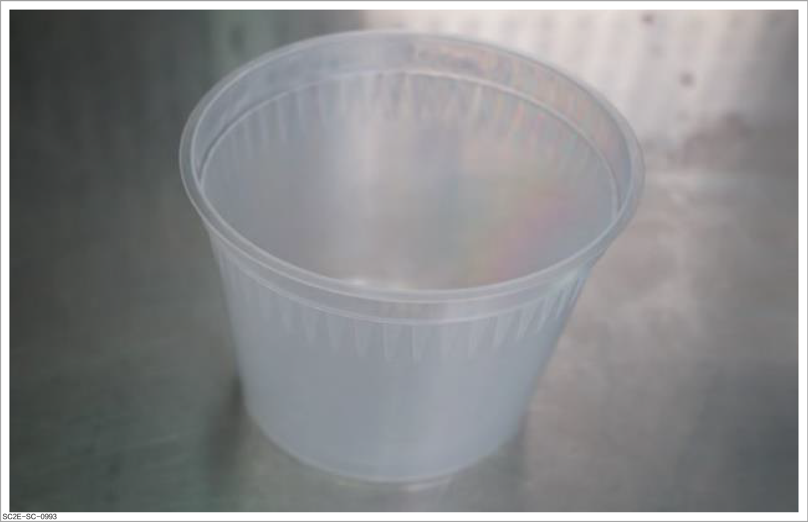
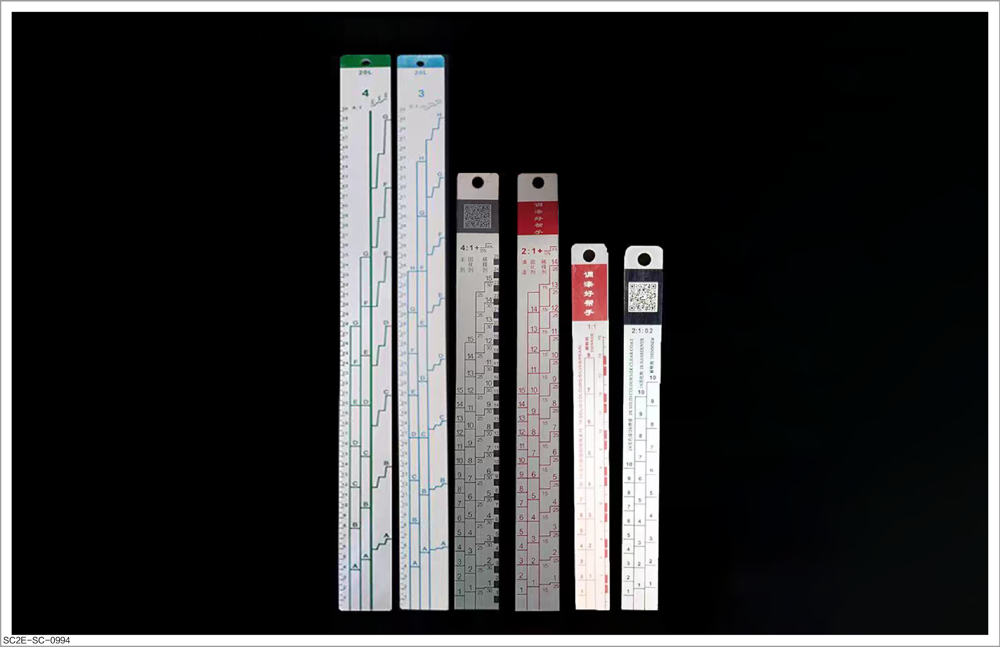
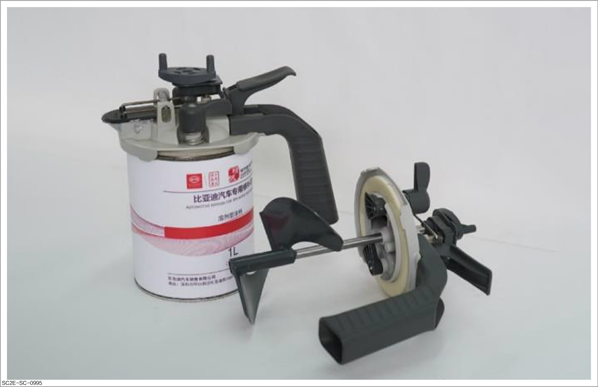
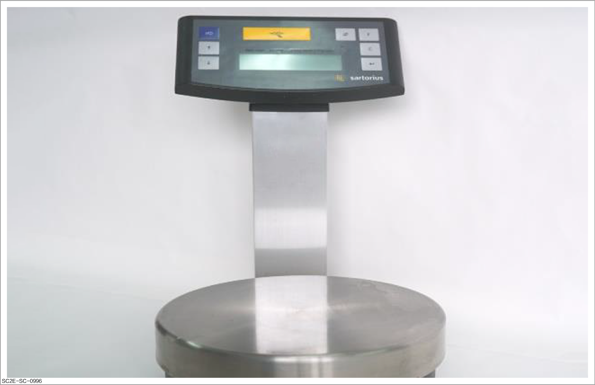
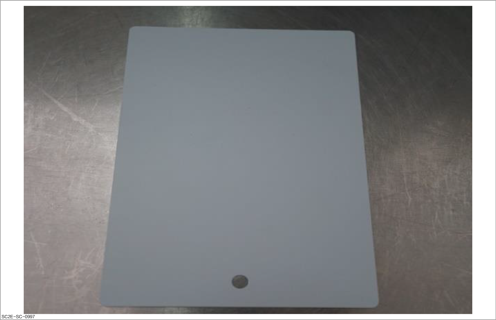
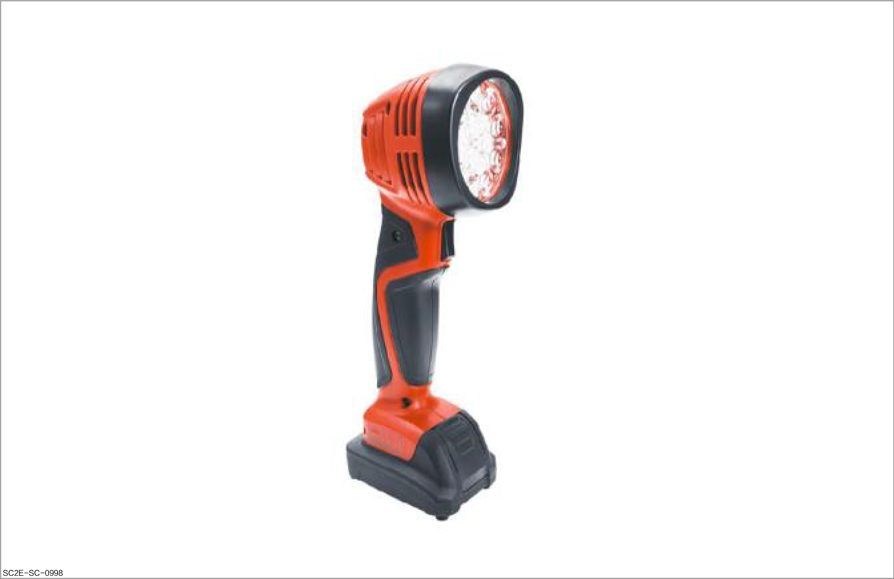
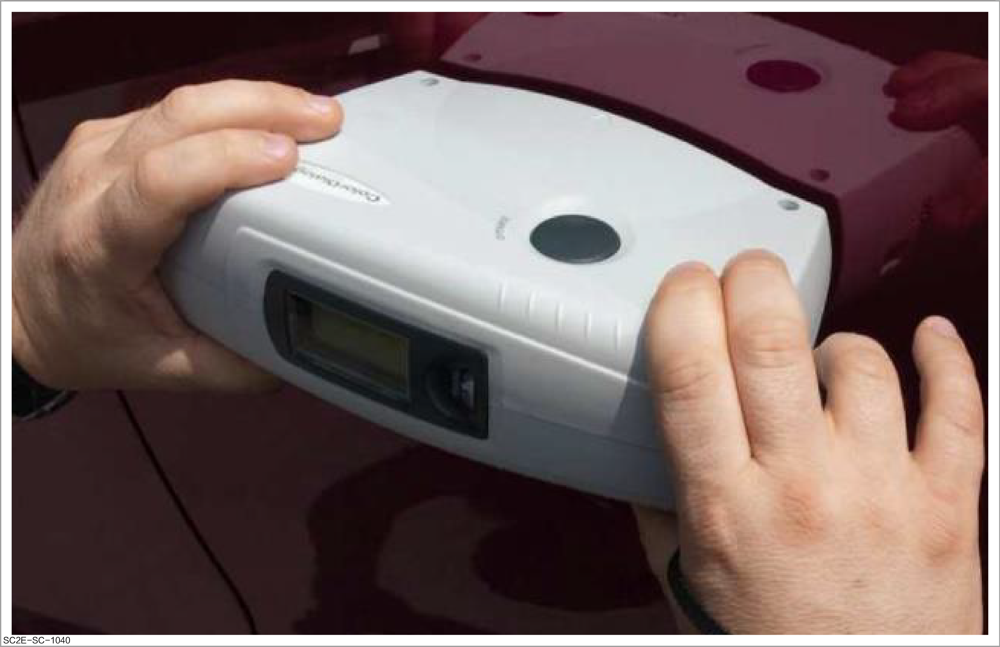

Color mixing tools

Tools in this document are general-purpose ones available on the market and can be purchased as required.
Paint mixing cup
-
Use disposable paint mixing cups usually.
-
When mixing water-based paint, select paint mixing cups with coating on the inner wall.
-
Use straight cylindrical paint mixing cups with the same upper and lower diameters for paint mixing.
-
Purpose: It is used to weigh and mix the paint.

Paint mixing ruler
-
Purpose: It is used to measure the paint by scales, and mix the paint.

Stirring cover
To prevent rust, a stirring cover made of stainless steel shall be used to stir the water-based paint.
-
Purpose: It is used to stir and pour out the color masterbatch paint.

Electronic scale
-
Purpose: It is used to weigh the paint.
-
Instructions for use:
-
Due to high sensitivity of the electronic scale, the influence of atmospheric air (wind) shall be avoided during use.
-
It must be placed horizontally to avoid high temperature and vibration.

-
Paint mixing rack
The mixing rack of water-based paint is insulated to prevent the paint from freezing.
-
Purpose: It is used to store and mix the paint.
-
Instructions for use: In order to ensure the stability of the color masterbatch concentration, it is necessary to stir for 15 minutes every morning and noon after work.

Color test plate
-
Purpose: It is used for paint color comparison.
-
Instructions for use:
-
Solvent-resistant color test plates shall be used.
-
For comparison with water-based paint, the primed color test plate shall be used to avoid applying the paint directly on the bare metal.
-
For comparison with water-based paint, the primed color test plate shall be used to avoid applying the paint directly on the bare metal.

-
Color mixing light
-
Introduction: It, close to the effect of sunlight, can be used to recognize different colors and different colors of paints containing metal, pearl, Xirallic pearl and other pigment compositions.
-
Purpose: It is used for color comparison.

Colorimeter
-
Introduction: Even if the corresponding color number of a certain vehicle color cannot be found out, the colorimeter can be used to measure the closest formula of the color in the formula database, thus simplifying the color mixing.
-
Purpose:
-
An instrument that allows computer-based color identification, and can identify colors and search the formula information.
-
The color curve graph is analyzed with a colorimeter to obtain the formula of a color closest to it.

-